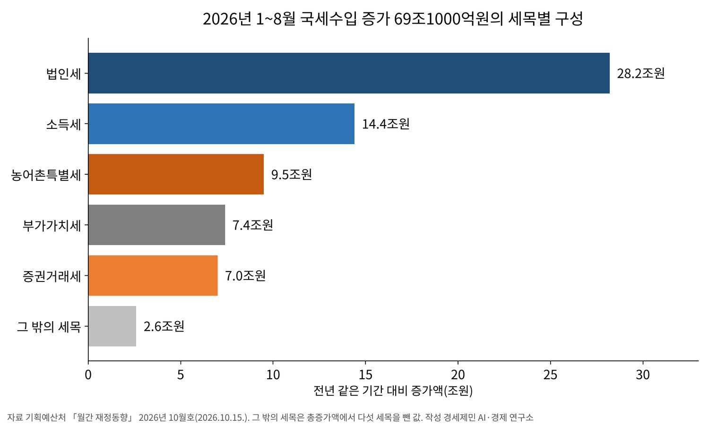
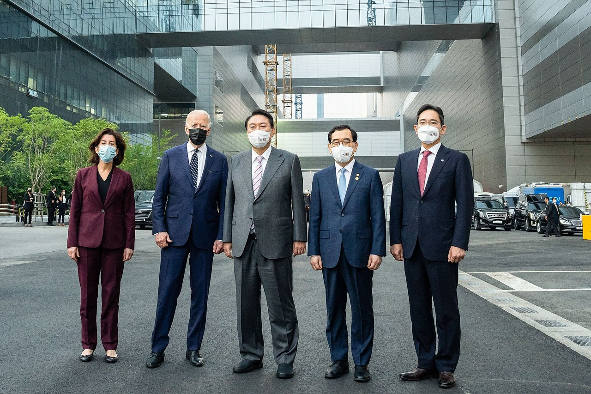
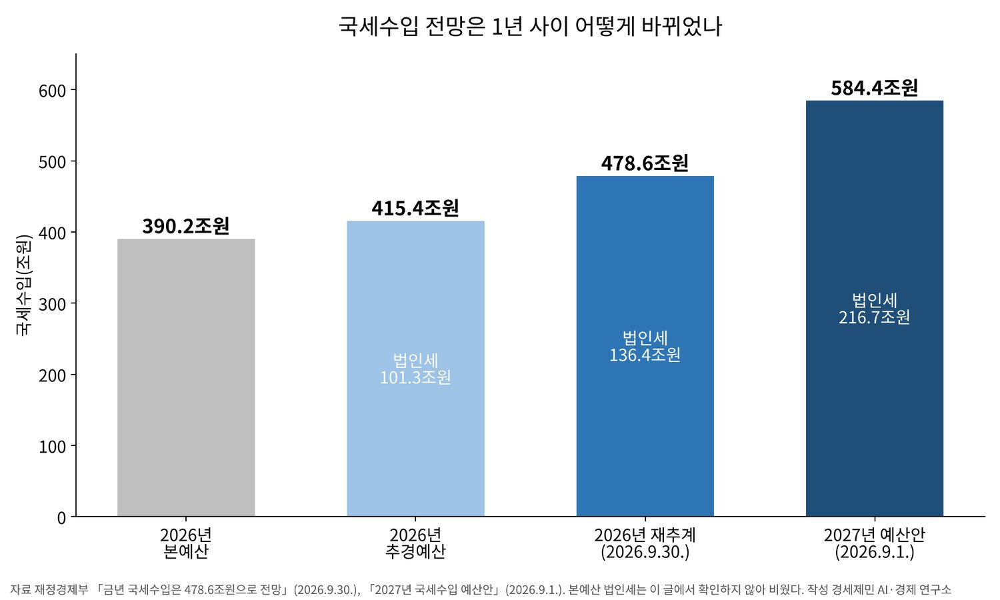

[재정 브리핑②] 국세 8월까지 69조원 더 걷혀, 내년 예산은 법인세 216조원에 기대
반도체 두 회사 영업이익 전망 81조원에서 638조원으로, 올해 국세 전망 478조6000억원
본예산보다 88조원 많아, 국회예산정책처는 지난해 올해 법인세를 87조5000억원으로 봐
미래대응기금 162조3000억원 가운데 104조4000억원은 여유자금으로 적립
1~8월 관리재정수지 적자 8년 만에 최소, 중앙정부 채무는 지난해 말보다 104조원 늘어
올해 1~8월 국세가 329조9000억원 걷혔다. 1년 전보다 69조1000억원 많다. 법인세가 28조2000억원 늘어 증가분의 41%를 차지했다.
반도체 기업이 법인세 중간예납을 시작한 8월 한 달에만 법인세가 1년 전 같은 달보다 23조8000억원 늘었다. 중간예납은 그해 상반기 실적을 바탕으로 세금 일부를 8월에 미리 내는 제도다.
정부는 올해 국세를 478조6000억원으로 다시 셈했다. 본예산보다 88조4000억원 많다. 내년 예산안은 국세를 584조4000억원으로 잡았고 그 가운데 법인세가 216조7000억원이다.
나라 곳간이 반도체 기업의 실적에 얼마나 기대게 됐는지 짚는다. 그 돈을 담겠다는 미래대응기금이 어떻게 짜였는지도 정부 자료로 견준다.
1. 8월까지 더 걷힌 세금 69조원
기획예산처가 10월 15일 낸 월간 재정동향 10월호를 보면 1~8월 총수입은 529조7000억원이다. 1년 전보다 98조원 늘었다. 같은 기간 총지출은 524조7000억원으로 39조3000억원 늘었다. 총수입 증가액이 총지출 증가액의 2.5배다.
세목별로 법인세 28조2000억원, 소득세 14조4000억원, 농어촌특별세 9조5000억원, 부가가치세 7조4000억원, 증권거래세 7조원이 늘었다. 증권거래세는 거래대금 증가와 세율 환원으로, 농어촌특별세는 코스피 거래대금 증가로 늘었다.
증시 거래와 맞물린 두 세목의 증가분을 더하면 16조5000억원이다. 소득세 증가분 14조4000억원보다 많다. 법인세와 증시에 연동된 두 세목이 1~8월 늘어난 국세의 65%를 만들었다.

나라살림 지표도 좋아졌다. 정부 전체 수입에서 지출을 뺀 통합재정수지는 1~8월 5조원 흑자다. 8월 누계로 2018년 이후 8년 만의 흑자다. 사회보장성기금 흑자 48조1000억원을 뺀 관리재정수지는 43조원 적자로, 1년 전 88조3000억원 적자에서 절반 아래로 줄었다.
빚은 계속 늘었다. 8월 말 중앙정부 채무는 1372조1000억원이다. 한 달 새 17조9000억원, 지난해 말보다 104조원 늘었다. 1~9월 국고채 발행은 179조7000억원으로 올해 발행 한도의 80.4%에 이르렀다. 적자가 줄어드는 해에도 채무 잔액은 커졌다.
2. 빗나간 전망 88조원
재정경제부는 9월 30일 세수추계위원회를 거친 재추계를 냈다. 올해 국세는 478조6000억원으로 지난해 실적 373조9000억원보다 104조7000억원 많다. 추경예산 415조4000억원보다 63조2000억원, 본예산 390조2000억원보다 88조4000억원 많다.
법인세는 136조4000억원으로 추경 전망 101조3000억원보다 35조1000억원 많다. 소득세는 152조4000억원, 증권거래세는 12조4000억원, 농어촌특별세는 20조3000억원으로 잡혔다.
재정경제부는 반도체 영업이익 급증과 특별배당, 증시 활성화, 민간소비 회복을 원인으로 들었다. 기업 이익에 붙는 법인세와 임금·배당·주택거래에 붙는 소득세, 주식 거래에 붙는 세금이 한꺼번에 늘었다.
같은 기간 반도체 영업이익 전망도 크게 불었다. 삼성전자와 SK하이닉스의 올해 영업이익 시장 전망 합계는 본예산을 짜던 2025년 7월 81조원이었다. 추경 전망의 바탕이 된 올해 2월에는 339조원, 9월 말 재추계 때는 638조원이었다.
국회도 맞히지 못했다. 국회예산정책처는 2025년 10월 31일 보고서에서 올해 국세를 396조1000억원으로 봤다. 정부안보다 5조9000억원 높게 봤지만 법인세는 87조5000억원으로 잡았다. 재추계보다 48조9000억원 적다.
오차는 올해가 처음이 아니다. 앞선 세 해는 반대로 모자랐다. 국세는 본예산보다 2023년 56조4000억원, 2024년 30조8000억원, 2025년 8조5000억원 덜 걷혔다. 세 해 연속 모자랐던 세수가 올해는 88조원 넘쳤다.
정부는 세수추계위원회를 정부 심의기구로 올리고 인공지능 추계모형과 정례 재추계를 들였다고 밝혔다.

3. 내년 예산 584조원의 뼈대
정부가 9월 1일 국무회의에서 의결한 2027년 예산안의 총지출은 820조9000억원이다. 올해보다 12.8% 늘어 역대 최고 증가율이다. 국세수입은 584조4000억원으로 올해 추경예산보다 168조9000억원 많다.
세목으로 보면 법인세가 216조7000억원으로 올해 추경보다 115조4000억원, 소득세가 180조원으로 43조2000억원 많다.
올해 재추계와 견줘도 법인세는 80조3000억원, 소득세는 27조6000억원 많다. 재정경제부는 법인세 증가 까닭을 반도체 기업 중심의 영업이익 급증으로 들었다. 소득세 증가 까닭에는 반도체 기업 특별성과급 확대를 넣었다.
국세에서 법인세가 차지하는 몫은 올해 재추계 기준 28.5%에서 내년 예산안 37.1%로 커진다. 세금 100원 가운데 37원을 기업 이익에서 거두겠다는 계획이다. 정부는 그 이익의 중심에 반도체 기업을 놓았다.

정부는 세수가 늘어 재정 지표가 나아진다고 본다. 관리재정수지 적자는 국내총생산 대비 올해 3.9%에서 내년 0.1%로 줄고, 국가채무 비율은 51.6%에서 48.3%로 낮아진다. 다만 국가채무 금액은 올해 1413조8000억원에서 내년 1519조8000억원으로 106조원 는다.
4. 미래대응기금 162조원의 구조
기획예산처는 8월 21일 재정운용전략협의회에서 미래대응기금 추진방안을 내놨다. 초과세수를 쌓아 청년, 성장동력, 지방, 교육 네 분야에 전략적으로 투자하고, 세수가 출렁일 때 재정을 받치는 장치로 쓰겠다는 구상이다.
내년 예산안은 최근 10년 내국세가 늘어 온 흐름을 이은 추세선을 넘는 추가세수 162조3000억원을 기금 재원으로 잡았다. 45조4000억원은 사업에 쓰고 12조5000억원은 국채 신규발행을 줄이는 데 쓴다. 나머지 104조4000억원은 여유자금으로 쌓는다.
기금은 국회 의결 없이 주요 지출을 30%까지 바꿀 수 있게 설계됐다. 내년 사업비 45조3625억원에 견주면 약 13조6000억원이다. 국회 재정경제기획위원회 검토보고서는 정부의 운용 폭은 커지지만 국회의 사전 통제 범위는 줄 수 있다고 지적했다.
지금 법은 남는 세금의 쓰임에 순서를 정해 두었다. 국가재정법 제90조는 결산 뒤 쓰고 남은 세계잉여금을 지방교부세와 지방교육재정교부금 정산에 쓸 수 있게 한다. 그 나머지의 30% 이상은 공적자금상환기금에, 다시 남은 것의 30% 이상은 국가채무 상환에 써야 한다.
미래대응기금은 결산 뒤 남는 돈이 아니라 예산을 짤 때 추가세수를 미리 떼어 쌓는다. 지방교육재정교부금 산식은 성장률과 학령인구 변동률에 연동하도록 바꾸고, 그 절감분을 기금의 교육·인재계정에 쌓는다. 기획예산처는 관련 법률 제정과 개정을 연내 마치려고 국회와 협의하겠다고 밝혔다.
5. 출렁이는 세수와 늘어나는 빚, 약해지는 통제
첫째는 세수의 변동성이다. 두 회사 영업이익 전망은 일곱 달 남짓 사이 339조원에서 638조원으로 바뀌었다. 내년 예산은 법인세 216조7000억원을 전제로 섰다.
법인세는 앞 해 실적분과 그해 상반기 실적에 따른 중간예납분으로 걷힌다. 업황이 꺾이면 내년 중간예납부터 줄어들 가능성이 높다. 법인세 결손은 2023년 24조6000억원, 2024년 15조2000억원으로 두 해 국세 결손 87조2000억원의 46%였다.
둘째는 빚이다. 내년 관리재정수지는 사실상 균형에 가깝지만 국가채무는 106조원 는다. 국민의힘 의원들은 국정감사에서 여유자금 104조원을 쌓으면서 국가채무를 106조원 늘리는 구조라고 비판했다.
여유자금 적립은 지출이 아니라 정부가 가진 금융자산을 늘리는 일이어서 재정수지 적자로 잡히지 않는 것으로 보인다. 그래서 수지는 균형에 가까운데 빚은 느는 그림이 나온다(연구소 추정).
국민의힘 이종욱 의원은 초과세수가 생기면 국채 발행부터 줄여야 한다고 주장했다. 정부는 기금에서 12조5000억원을 떼어 국채 신규발행을 줄이고 기존 중기계획보다 채무를 낮췄다고 설명한다.
셋째는 국회의 통제다. 국민의힘 임이자 의원은 기금이 국회 심의를 우회하는 상시 추경이 될 수 있다고 지적했다. 박홍근 기획예산처 장관은 10월 8일 국정감사에서 「결코 쌈짓돈이 아니다」라며 법적 범위 안에서 운용하겠다고 답했다.
넷째는 지방이다. 지방교부세는 내국세의 일정 비율로 정해진다. 정부는 추세선을 넘는 세수를 기금으로 떼면서 그 몫을 교부세 계산의 바탕(모수)에서 빼는 쪽으로 설계했다.
예산안 기준으로 내년 정률분(내국세 비율로 정해지는 몫) 지방교부세가 기존 산정방식보다 30조5000억원 적게 편성됐다는 추산이 나왔다. 더불어민주당 정태호 의원도 국정감사에서 약 31조원이 덜 간다는 분석을 들어 지방재정을 걱정했다.
박홍근 장관은 계산 바탕을 고치지 않았을 때보다 적게 가는 점은 인정했다. 다만 내년 지방교부세 자체는 올해보다 늘고 기금 지방계정과 지역 투자로 보완한다고 답했다.
대한민국시도지사협의회는 10월 16일 제주 간담회에서 합의한 공동건의문을 18일 냈다. 현행 산정방식 유지와 지방교부세율 확대를 요구했다. 시·도지사들은 기금 지방계정 15조3000억원이 용도가 정해져 있어 보통교부세보다 자율성이 떨어진다고 지적했다.
정부의 논리도 분명하다. 호황 때 쌓아 두면 세수가 줄어도 사업이 멈추지 않는다. 문제는 쌓는 규칙과 꺼내는 규칙을 누가 정하느냐다. 국회 의결 없이 주요 지출을 30%까지 바꿀 수 있게 한 규정이 그 규칙의 한가운데에 있다.
6. 물어야 할 것
경세제민 AI·경제연구소는 세 곳에 묻는다. 재정경제부에는 내년 법인세 216조7000억원이 깔고 있는 반도체 영업이익 전제를 숫자로 공개하는지 묻는다. 반도체 업황이 꺾일 때 세수가 얼마나 줄어드는지 시나리오도 함께 내놓아야 국회가 심의할 수 있다.
기획예산처에는 여유자금 104조4000억원의 최소 적립 규모와 기금 존속 기한을 법에 적는지 묻는다. 지방에 덜 가는 몫을 기금 지방계정으로 메운다면 그 돈을 지방이 스스로 고를 수 있는지도 묻는다.
국회에는 30% 자체 변경 한도를 그대로 두는지 묻는다. 세계잉여금 일부를 채무 상환에 쓰게 한 국가재정법 제90조와 기금 적립의 관계도 법안 심사에서 정리해야 한다.
7. 확인하지 못한 것
재정경제부 재추계와 2027년 국세수입 예산안은 KDI 경제교육·정보센터 게재 요약으로 확인했다. 원문 첨부 표는 열지 못했다. 올해 소득세·증권거래세·농어촌특별세 전망과 반도체 영업이익 전망 81조원, 339조원, 638조원은 정부 설명을 옮긴 보도 셋 이상으로 대조했다.
미래대응기금 관련 법안은 국회 재정경제기획위원회 검토보고서까지 나왔다. 상임위원회 의결 여부는 확인하지 못했다. 지방교부세 30조5000억원 감소는 예산안을 바탕으로 한 추산을 보도로 확인했고, 정부 공식 산정표는 찾지 못했다.
국가채무 1519조8000억원과 106조원 증가는 보도 둘로 확인했고, 국내총생산 대비 48.3%는 기획예산처 자료로 확인했다.
관리재정수지가 거의 균형인데 채무가 106조원 느는 까닭을 정부가 따로 설명한 자료는 찾지 못했다. 5절의 설명은 연구소 추정이다. 104조원·106조원 비판을 한 의원은 보도마다 다르게 적혀 국민의힘 의원들로 썼다.
9월 국세 실적과 3분기 반도체 기업 확정 실적은 이 글을 쓴 10월 21일 아침까지 나오지 않았다. 올해 결산 세계잉여금과 교부세 정산 규모는 내년 결산 때 정해진다.
8. 보도마다 다른 값
초과세수 규모가 보도마다 갈린다. 63조2000억원은 국세 전체를 추경예산과 견준 값이다. 56조2000억원은 내국세만 추경예산과 견준 값이다. 8월 보도의 「50조원 이상」은 재추계 전 전망이다.
오차율도 15.2%와 22.7%가 함께 돈다. 앞은 추경예산 대비, 뒤는 본예산 대비다. 추경 시점은 보도마다 2~4월로 다르게 적혔다.
국회예산정책처 자료로는 정부가 3월 31일 추경안을 국회에 냈다. 국회예산정책처는 그때 올해 국세를 추경 세입 415조4000억원보다 1조7000억원 적은 413조8000억원으로 봤다.
미래대응기금 첫해 사업 지출은 45조4000억원이다. 계정별 금액을 더한 값은 보도마다 달라 이 글에 쓰지 않았다.
「미래대응기금 200조원」은 추가세수 162조3000억원에 올해 초과세수와 운용수익을 더한 전망이다. 확정된 값이 아니다.
참고문헌
공식 발표자료와 법령
- 기획예산처, "월간 재정동향 2026년 10월호", 2026.10.15., KDI 경제교육·정보센터 게재, https://eiec.kdi.re.kr/policy/materialView.do?num=288153
- 재정경제부 세제실 조세총괄정책관 조세추계과, "금년 국세수입은 478.6조원으로 전망", 2026.9.30., KDI 경제교육·정보센터 게재, https://eiec.kdi.re.kr/policy/materialView.do?num=287586
- 재정경제부 세제실 조세총괄정책관 조세추계과, "2027년 국세수입 예산안", 2026.9.1., KDI 경제교육·정보센터 게재, https://eiec.kdi.re.kr/policy/materialView.do?num=286164
- 기획예산처 예산실 예산총괄심의관 예산총괄과, "「대체불가 대한민국으로 대도약」 2027년도 예산안 및 2026~2030년 국가재정운용계획 발표", 2026.9.1., KDI 경제교육·정보센터 게재, https://eiec.kdi.re.kr/policy/materialView.do?num=286142
- 정책브리핑, "내년 예산안 820.9조 원, 역대 최대…162조 미래대응기금 신설", 2026.9.1., https://www.korea.kr/news/policyFocusView.do?newsId=148970973&pkgId=49500845
- 기획예산처 미래전략기획실 재정혁신정책관 재정혁신총괄과, "미래를 대비하는 새로운 재정운용의 틀 제시", 2026.8.21., KDI 경제교육·정보센터 게재, https://eiec.kdi.re.kr/policy/materialView.do?num=285626
- 기획예산처 예산실 예산총괄심의관 예산정책과, "경인사연·KDI 등 학계·연구기관도 2027년도 예산안 추진방향과 미래대응기금 필요성에 공감대 형성", 2026.9.11., KDI 경제교육·정보센터 게재, https://eiec.kdi.re.kr/policy/materialView.do?num=286733
- 「국가재정법」 제90조(세계잉여금 등의 처리 및 사용계획), 법률 제21419호, 2026.3.10. 일부개정, 2026.9.11. 시행, 국가법령정보센터, https://www.law.go.kr/LSW//lsLawLinkInfo.do?chrClsCd=010202&lsJoLnkSeq=900050135&lsId=010301&print=print
연구보고서
- 국회예산정책처 세제분석2과, "2026년 NABO 국세수입 전망 2025~2029", 2025.10.31., https://www.nabo.go.kr/ko/report/analysisView.do?key=2509250001&idx=8937
- 국회예산정책처, "「2026년도 제1회 추가경정예산안 분석」 발간", 2026.4.1., https://www.nabo.go.kr/ko/notice/releasesView.do?idx=9212
언론 보도
- 권구성, "AI 쓰고도 벗어난 법인세 전망치…의존도 높아지며 재정 안정성↓", 세계일보, 2026.10.11., https://www.segye.com/newsView/20261009506378
- 김찬미, "미래대응기금, 국회 재정통제 약화 우려…정부 자체 변경 규모 최대 13조6000억", 파이낸셜뉴스, 2026.10.4., https://www.fnnews.com/news/202610041816220176
- 김현구·김기랑·오종원, "[2026 국감] 미래대응기금 집중포화…박홍근 "법대로 운용·부족한 예산 보완"(종합)", 뉴스핌, 2026.10.8., https://www.newspim.com/news/view/20261008001262
- 이보미, "시·도지사들 "미래대응기금 조성에 지방교부세 줄여선 안 돼"", 파이낸셜뉴스, 2026.10.18., https://www.fnnews.com/news/202610181421240573
도표 출처
- [도표1] 경세제민 AI·경제연구소 작성, 자료 기획예산처 「월간 재정동향 2026년 10월호」(2026.10.15.)
- [도표2] 경세제민 AI·경제연구소 작성, 자료 재정경제부 「금년 국세수입은 478.6조원으로 전망」(2026.9.30.), 「2027년 국세수입 예산안」(2026.9.1.)
[사진 출처]
- [사진1] Office of the President of the United States(미국 백악관), "President Biden visited the Samsung Electronics Pyeongtaek Campus (1).jpg", 위키미디어 공용, 퍼블릭 도메인(미국 연방정부 저작물), 2022년 5월 20일 촬영. https://commons.wikimedia.org/wiki/File:President_Biden_visited_the_Samsung_Electronics_Pyeongtaek_Campus_(1).jpg
※ 이 브리핑은 AI 프로그램 클로드를 활용해 작성했습니다.
관련기사
- [거시경제] 이윤은 18.5% 늘고 임금은 1.9% 늘었다
- 인천 신설구 100일, 법은 「지원하며」라 썼는데 개편 국비 예산은 두 해째 0원
- [가계부채 브리핑] 가계대출 9개월 만에 2조2000억원 감소, 주택담보대출은 3조3000억원 늘어
- 수출 1209억달러 역대 최대, 제조업 고용보험 가입자는 외국인 빼면 4000명 줄어
저작권자 © AI경세제민 무단전재 및 재배포, AI학습 및 활용 금지